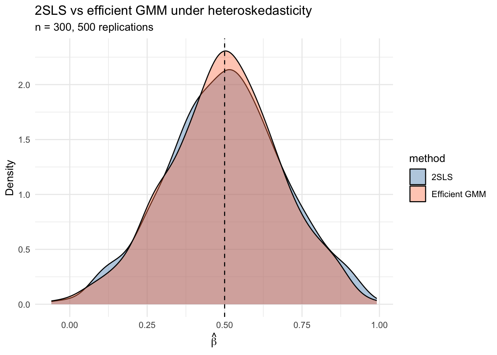
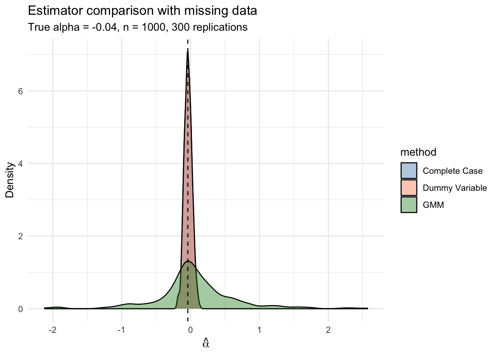

library(ggplot2)
library(gmm)
library(sandwich)
library(lmtest)
library(estimatr)
library(MASS)12. GMM
Generalized method of moments
This chapter demonstrates the Generalized Method of Moments (GMM) framework computationally. We show that OLS, IV, and 2SLS are all special cases, then build up to efficient GMM estimation, the J-test, and a missing data application. The key reference is Hansen, Chapter 13.
Questions this chapter answers:
- How does GMM unify OLS, IV, and 2SLS under a single framework of moment conditions?
- What is the optimal weighting matrix, and how does efficient GMM achieve the semiparametric variance bound?
- How does the J-test detect misspecification in overidentified models?
- What is the GMM “trinity” — Wald, distance, and J-test — and how does the GMM endogeneity test replace Durbin–Wu–Hausman under heteroskedasticity?
- How can nonlinear GMM handle problems like missing data?
1 Everything is a moment condition
Every estimator we have studied solves a set of moment conditions \(\mathbb{E}[g_i(\beta)] = 0\). The sample analog sets \(\bar{g}_n(\hat\beta) = \frac{1}{n}\sum g_i(\hat\beta) = 0\).
| Estimator | Moment condition | Solution |
|---|---|---|
| OLS | \(\mathbb{E}[X_i(Y_i - X_i'\beta)] = 0\) | the OLS estimator |
| IV | \(\mathbb{E}[Z_i(Y_i - X_i'\beta)] = 0\) | \((Z'X)^{-1}Z'Y\) |
| 2SLS | Same as IV, with \(W = (Z'Z)^{-1}\) | \((X'P_Z X)^{-1}X'P_Z Y\) |
Definition 1 (GMM Estimator (Hansen 13.1)) The GMM estimator minimizes \(J(\beta) = n\,\bar{g}_n(\beta)' W\, \bar{g}_n(\beta)\), where \(\bar{g}_n(\beta) = \frac{1}{n}\sum g_i(\beta)\) and \(W\) is a positive definite weight matrix. Different choices of \(W\) yield different estimators; the optimal \(W = \Omega^{-1}\) minimizes asymptotic variance.
NoteGMM Unifies Everything
Every estimator in this course — OLS, GLS, IV, 2SLS, probit MLE — is a GMM estimator with specific moment conditions and weight matrices. The GMM framework provides a single set of tools for estimation, inference, and specification testing.
Let’s verify this computationally. We simulate an IV model with one endogenous regressor and one instrument:
set.seed(42)
n <- 500
# DGP: Y = 1 + 0.5*X + e, where X is endogenous
u <- rnorm(n)
Z <- rnorm(n)
X <- 0.8 * Z + u # X correlated with u
e <- 0.6 * u + rnorm(n) # e correlated with u through shared u
Y <- 1 + 0.5 * X + eOLS is biased because \(\text{Cov}(X, e) \neq 0\):
# OLS: E[X(Y - Xb)] = 0
beta_ols <- solve(t(cbind(1, X)) %*% cbind(1, X)) %*% t(cbind(1, X)) %*% Y
cat("OLS slope:", round(beta_ols[2], 4), " (biased, true = 0.5)\n")OLS slope: 0.8725 (biased, true = 0.5)IV uses the instrument \(Z\) to form moment conditions \(\mathbb{E}[Z(Y - X\beta)] = 0\):
# IV: E[Z(Y - Xb)] = 0, just-identified (ell = k)
Xmat <- cbind(1, X)
Zmat <- cbind(1, Z)
beta_iv <- solve(t(Zmat) %*% Xmat) %*% t(Zmat) %*% Y
cat("IV slope:", round(beta_iv[2], 4), " (consistent)\n")IV slope: 0.4949 (consistent)When the number of moment conditions \(\ell\) equals the number of parameters \(k\), we can solve exactly. But what happens when \(\ell > k\)?
2 The overidentification problem
With more instruments than parameters, no \(\beta\) can simultaneously zero out all moment conditions. We need a principled way to get as close as possible.
# Now add a second instrument
Z2 <- 0.5 * X + rnorm(n, sd = 2) # second instrument (weaker)
Zmat2 <- cbind(1, Z, Z2) # 3 instruments, 2 parameters
# Can't solve Z'(Y - Xb) = 0 exactly (3 equations, 2 unknowns)
# Check: the IV formula with the full Z matrix is not square
cat("Z'X dimensions:", nrow(t(Zmat2) %*% Xmat), "x", ncol(t(Zmat2) %*% Xmat), "\n")Z'X dimensions: 3 x 2 cat("(not square -- can't invert directly)\n")(not square -- can't invert directly)2.1 The GMM criterion function
For a positive definite weight matrix \(W\), the GMM criterion is:
\[J(\beta) = n\,\bar{g}_n(\beta)' W\, \bar{g}_n(\beta) \tag{1}\]
The GMM estimator minimizes this weighted quadratic form.
# GMM criterion function for the linear IV model
gmm_criterion <- function(beta, Y, X, Z, W) {
g_bar <- colMeans(Z * as.numeric(Y - X %*% beta)) # sample moments
n <- nrow(X)
n * t(g_bar) %*% W %*% g_bar
}
# Closed-form GMM estimator: (X'Z W Z'X)^{-1} (X'Z W Z'Y)
gmm_linear <- function(Y, X, Z, W) {
XZ <- t(X) %*% Z
solve(XZ %*% W %*% t(XZ)) %*% XZ %*% W %*% t(Z) %*% Y
}Different weight matrices yield different estimators:
# Identity matrix
W_ident <- diag(3)
beta_gmm_ident <- gmm_linear(Y, Xmat, Zmat2, W_ident)
# (Z'Z)^{-1} -- this gives 2SLS
W_2sls <- solve(t(Zmat2) %*% Zmat2)
beta_gmm_2sls <- gmm_linear(Y, Xmat, Zmat2, W_2sls)
# Verify 2SLS matches
PZ <- Zmat2 %*% solve(t(Zmat2) %*% Zmat2) %*% t(Zmat2)
beta_2sls <- solve(t(Xmat) %*% PZ %*% Xmat) %*% t(Xmat) %*% PZ %*% Y
cat("GMM (W = I): slope =", round(beta_gmm_ident[2], 4), "\n")GMM (W = I): slope = 0.6327 cat("GMM (W = 2SLS): slope =", round(beta_gmm_2sls[2], 4), "\n")GMM (W = 2SLS): slope = 0.5307 cat("2SLS directly: slope =", round(beta_2sls[2], 4), "\n")2SLS directly: slope = 0.5307 Theorem 1 (2SLS as GMM (Hansen 13.2)) When \(W = (Z'Z/n)^{-1}\), the GMM estimator for the linear IV model reduces to 2SLS: \(\hat\beta_{2SLS} = (X'P_Z X)^{-1}X'P_Z Y\). Under homoskedasticity, 2SLS is efficient among all GMM estimators.
The choice of \(W\) matters when the model is overidentified—but the optimal choice is \(W = \Omega^{-1}\), where \(\Omega = \mathbb{E}[Z_i Z_i' e_i^2]\) is the variance of the moment conditions.
3 Efficient GMM by hand
The optimal weight matrix \(W = \Omega^{-1}\) minimizes the asymptotic variance of the GMM estimator. The two-step procedure is:
Theorem 2 (Efficient GMM (Hansen 13.4-13.5)) The efficient GMM estimator uses \(W = \hat\Omega^{-1}\), where \(\hat\Omega = \frac{1}{n}\sum g_i(\tilde\beta)g_i(\tilde\beta)'\) and \(\tilde\beta\) is a preliminary consistent estimator. This achieves the semiparametric efficiency bound among all estimators using the same moment conditions.
- Estimate \(\beta\) by 2SLS (using \(W = (Z'Z)^{-1}\)). Compute residuals \(\tilde{e}_i\).
- Estimate \(\hat\Omega = \frac{1}{n}\sum Z_i Z_i' \tilde{e}_i^2\), set \(\hat{W} = \hat\Omega^{-1}\), and re-estimate.
# Step 1: 2SLS
beta_step1 <- beta_2sls
e_step1 <- Y - Xmat %*% beta_step1
# Step 2: Estimate optimal weight matrix
Omega_hat <- (t(Zmat2) %*% diag(as.numeric(e_step1^2)) %*% Zmat2) / n
W_opt <- solve(Omega_hat)
# Re-estimate with optimal W
beta_step2 <- gmm_linear(Y, Xmat, Zmat2, W_opt)
cat("Step 1 (2SLS) slope: ", round(beta_step1[2], 4), "\n")Step 1 (2SLS) slope: 0.5307 cat("Step 2 (efficient) slope:", round(beta_step2[2], 4), "\n")Step 2 (efficient) slope: 0.529 We can iterate—updating \(\hat\Omega\) and re-estimating—until convergence:
# Iterated GMM
beta_iter <- beta_2sls
for (s in 1:20) {
e_s <- Y - Xmat %*% beta_iter
Omega_s <- (t(Zmat2) %*% diag(as.numeric(e_s^2)) %*% Zmat2) / n
W_s <- solve(Omega_s)
beta_new <- gmm_linear(Y, Xmat, Zmat2, W_s)
if (max(abs(beta_new - beta_iter)) < 1e-8) {
cat("Converged in", s, "iterations\n")
break
}
beta_iter <- beta_new
}Converged in 5 iterationscat("Iterated GMM slope:", round(beta_iter[2], 4), "\n")Iterated GMM slope: 0.529 4 Using the gmm package
The gmm package handles moment function specification, weighting, and inference. For a linear IV model, we can pass the formula directly:
# Linear IV via gmm()
# Formula: Y ~ X | Z (endogenous ~ instruments)
dat <- data.frame(Y = Y, X = X, Z1 = Z, Z2 = Z2)
# Two-step GMM
fit_2step <- gmm(Y ~ X, ~ Z1 + Z2, data = dat, type = "twoStep")
summary(fit_2step)
Call:
gmm(g = Y ~ X, x = ~Z1 + Z2, type = "twoStep", data = dat)
Method: twoStep
Kernel: Quadratic Spectral(with bw = 0.57799 )
Coefficients:
Estimate Std. Error t value Pr(>|t|)
(Intercept) 9.4738e-01 4.6839e-02 2.0226e+01 5.7701e-91
X 5.3688e-01 5.7361e-02 9.3595e+00 8.0104e-21
J-Test: degrees of freedom is 1
J-test P-value
Test E(g)=0: 4.620103 0.031599
Initial values of the coefficients
(Intercept) X
0.9419577 0.5306796 Compare to the iterative version:
fit_iter <- gmm(Y ~ X, ~ Z1 + Z2, data = dat, type = "iterative")
cat("Two-step slope:", round(coef(fit_2step)["X"], 4), "\n")Two-step slope: 0.5369 cat("Iterated slope:", round(coef(fit_iter)["X"], 4), "\n")Iterated slope: 0.5369 And verify against iv_robust (which computes 2SLS):
fit_iv <- iv_robust(Y ~ X | Z1 + Z2, data = dat)
cat("2SLS (iv_robust):", round(coef(fit_iv)["X"], 4), "\n")2SLS (iv_robust): 0.5307 cat("Two-step GMM: ", round(coef(fit_2step)["X"], 4), "\n")Two-step GMM: 0.5369 Under homoskedasticity, 2SLS and efficient GMM give the same estimates (Hansen Thm 13.6). The differences here arise because we simulated heteroskedastic-style errors.
5 When does efficient GMM help? A simulation
2SLS is efficient only under homoskedasticity. Under heteroskedasticity, efficient GMM can reduce variance. Let’s demonstrate with a Monte Carlo:
set.seed(99)
B <- 500
n_sim <- 300
beta_true <- 0.5
results <- data.frame(method = character(), estimate = numeric())
for (b in 1:B) {
u <- rnorm(n_sim)
z1 <- rnorm(n_sim)
z2 <- rnorm(n_sim)
x <- 0.6 * z1 + 0.3 * z2 + u
# Heteroskedastic errors: variance depends on z1
sigma_i <- 0.5 + abs(z1)
e <- sigma_i * rnorm(n_sim) + 0.5 * u
y <- 1 + beta_true * x + e
d <- data.frame(y = y, x = x, z1 = z1, z2 = z2)
# 2SLS
iv_fit <- tryCatch(
iv_robust(y ~ x | z1 + z2, data = d, se_type = "classical"),
error = function(e) NULL
)
# Two-step GMM
gmm_fit <- tryCatch(
gmm(y ~ x, ~ z1 + z2, data = d, type = "twoStep"),
error = function(e) NULL
)
if (!is.null(iv_fit) && !is.null(gmm_fit)) {
results <- rbind(results,
data.frame(method = "2SLS", estimate = coef(iv_fit)["x"]),
data.frame(method = "Efficient GMM", estimate = coef(gmm_fit)["x"])
)
}
}
# Compare variances
var_table <- aggregate(estimate ~ method, data = results,
FUN = function(x) c(mean = mean(x), var = var(x)))
var_table <- cbind(var_table[1], as.data.frame(var_table[[2]]))
names(var_table) <- c("method", "mean", "variance")
var_table$efficiency_ratio <- var_table$variance / min(var_table$variance)
print(var_table, digits = 4) method mean variance efficiency_ratio
1 2SLS 0.5025 0.03440 1.067
2 Efficient GMM 0.5000 0.03224 1.000ggplot(results, aes(x = estimate, fill = method)) +
geom_density(alpha = 0.4) +
geom_vline(xintercept = beta_true, linetype = "dashed") +
labs(title = "2SLS vs efficient GMM under heteroskedasticity",
subtitle = paste0("n = ", n_sim, ", ", B, " replications"),
x = expression(hat(beta)), y = "Density") +
theme_minimal() +
scale_fill_manual(values = c("steelblue", "coral"))
Under heteroskedasticity, efficient GMM has lower variance because it weights moment conditions by the inverse of their variance—upweighting informative, low-noise moments and downweighting noisy ones. Just as the Gauss-Markov theorem bounds OLS among linear unbiased estimators, the efficient GMM achieves the semiparametric bound among all estimators using the same moment conditions.
6 The J-test for overidentification
When \(\ell > k\) (more moment conditions than parameters), the model imposes testable restrictions. If the moment conditions are correctly specified, the minimized criterion value should be small.
\[J = n\,\bar{g}_n(\hat\beta)'\hat\Omega^{-1}\bar{g}_n(\hat\beta) \xrightarrow{d} \chi^2_{\ell - k} \tag{2}\]
Theorem 3 (J-Test for Overidentification (Hansen 13.14)) Under correct specification, the minimized GMM criterion \(J = n\,\bar{g}_n(\hat\beta)'\hat\Omega^{-1}\bar{g}_n(\hat\beta) \xrightarrow{d} \chi^2_{\ell - k}\), where \(\ell\) is the number of moment conditions and \(k\) is the number of parameters. Rejection indicates that the moment conditions are mutually inconsistent.
# J-test from our earlier fit (valid instruments)
specTest(fit_2step)
## J-Test: degrees of freedom is 1 ##
J-test P-value
Test E(g)=0: 4.620103 0.031599Here \(\ell - k = 3 - 2 = 1\) degree of freedom. A large p-value means we fail to reject: the overidentifying restrictions are consistent with the data.
6.1 When the J-test rejects
If an instrument is invalid (correlated with the error), the J-test should detect this:
set.seed(123)
n <- 500
u <- rnorm(n)
z1 <- rnorm(n)
z2_bad <- rnorm(n)
x <- 0.6 * z1 + 0.3 * z2_bad + u
e <- 0.5 * u + 0.4 * z2_bad + rnorm(n) # z2_bad enters the error!
y <- 1 + 0.5 * x + e
d_bad <- data.frame(y = y, x = x, z1 = z1, z2 = z2_bad)
fit_bad <- gmm(y ~ x, ~ z1 + z2, data = d_bad, type = "twoStep")
specTest(fit_bad)
## J-Test: degrees of freedom is 1 ##
J-test P-value
Test E(g)=0: 1.4055e+01 1.7758e-04The J-test has a limitation: if all instruments are invalid in the same direction, the test may not detect the problem. It tests whether the instruments disagree with each other, not whether any individual instrument is valid.
WarningJ-Test Limitations
The J-test only detects when instruments disagree with each other. If all instruments are invalid in the same direction, the test has no power. It tests internal consistency of the overidentifying restrictions, not the validity of any individual instrument.
6.2 J-test rejection rates by simulation
Let’s verify the J-test has correct size (under valid instruments) and power (under an invalid instrument):
set.seed(42)
B <- 500
n_sim <- 300
rejections <- data.frame(scenario = character(), rejected = logical())
for (scenario in c("valid", "invalid")) {
for (b in 1:B) {
u <- rnorm(n_sim)
z1 <- rnorm(n_sim)
z2 <- rnorm(n_sim)
x <- 0.6 * z1 + 0.3 * z2 + u
if (scenario == "valid") {
e <- 0.5 * u + rnorm(n_sim)
} else {
e <- 0.5 * u + 0.3 * z2 + rnorm(n_sim) # z2 in error
}
y <- 1 + 0.5 * x + e
d <- data.frame(y = y, x = x, z1 = z1, z2 = z2)
fit <- tryCatch(gmm(y ~ x, ~ z1 + z2, data = d, type = "twoStep"),
error = function(e) NULL)
if (!is.null(fit)) {
jtest <- tryCatch(specTest(fit), error = function(e) NULL)
if (!is.null(jtest)) {
pval <- jtest$test[1, 2] # p-value
rejections <- rbind(rejections,
data.frame(scenario = scenario, rejected = pval < 0.05))
}
}
}
}
rej_rates <- aggregate(rejected ~ scenario, data = rejections, mean)
names(rej_rates)[2] <- "rejection_rate"
rej_rates scenario rejection_rate
1 invalid 0.998
2 valid 0.068Under valid instruments, the rejection rate should be near 0.05 (the nominal size). Under the invalid instrument, the rejection rate should be substantially higher.
7 Wald, distance, and endogeneity tests in GMM
The J-test is one of a family of GMM-based tests. The Wald test (for parameter restrictions) and the distance test (LR-style) round out the GMM “trinity” — analogs of \(t\)/\(F\), LR, and Sargan from classical inference, but valid under heteroskedasticity. A close cousin, the GMM endogeneity test, is the heteroskedasticity-robust generalization of Durbin–Wu–Hausman.
7.1 Wald test in GMM
For testing \(H_0: r(\bm{\beta}) = \bm{\theta}_0\) with \(q\) restrictions, the Wald statistic is \[ W = n\,(r(\hat{\bm{\beta}}) - \bm{\theta}_0)'\,\hat{\bm{V}}_{\theta}^{-1}\,(r(\hat{\bm{\beta}}) - \bm{\theta}_0) \xrightarrow{d} \chi^2_q, \] with \(\hat{\bm{V}}_\theta = \hat{\bm{R}}'\,\hat{\bm{V}}_\beta\,\hat{\bm{R}}\) and \(\hat{\bm{R}} = \partial r / \partial \bm{\beta}\) (delta method). For a single linear restriction this reduces to a \(z\)-statistic squared.
Test whether the slope in our two-step fit equals the true value \(0.5\):
b_hat <- coef(fit_2step)["X"]
v_hat <- vcov(fit_2step)["X", "X"]
W_stat <- (b_hat - 0.5)^2 / v_hat
p_W <- 1 - pchisq(W_stat, df = 1)
c(beta_hat = b_hat, W = W_stat, p = p_W)beta_hat.X W.X p.X
0.5368752 0.4132659 0.5203165 For multi-restriction or nonlinear hypotheses the same logic extends via the gradient \(\hat{\bm{R}}\).
7.2 Distance test
The distance test is the criterion-based analog of the likelihood ratio: estimate the model with and without the restriction (both via efficient GMM), then take the difference of the minimized criteria. \[ D = \tilde{J} - \hat{J} \xrightarrow{d} \chi^2_q, \qquad \tilde{J} = J_n(\tilde{\bm{\beta}}_{R}), \quad \hat{J} = J_n(\hat{\bm{\beta}}). \] Two practical advantages over Wald: (i) it is invariant to reparameterization (Wald can give different answers for \(\beta_1 = 1\) vs. \(1/\beta_1 = 1\)); (ii) it uses the same criterion that produces the J-test, so all the inferential machinery is already on hand.
Test the same hypothesis \(\beta_X = 0.5\) via the distance form. The “restricted” GMM substitutes the value of \(\beta_X\) and re-optimizes only over the intercept:
## Build the GMM criterion at fixed beta_X = 0.5 (one-parameter problem in the intercept)
gmm_criterion_fixed <- function(b0, beta_X = 0.5, Y, X, Z, W) {
beta <- c(b0, beta_X)
g_bar <- colMeans(Z * as.numeric(Y - X %*% beta))
n <- nrow(X)
as.numeric(n * t(g_bar) %*% W %*% g_bar)
}
## Reuse the efficient weight from the unrestricted two-step fit
e_unr <- as.numeric(Y - Xmat %*% coef(fit_2step))
Omega_R <- (t(Zmat2) %*% diag(e_unr^2) %*% Zmat2) / n
W_R <- solve(Omega_R)
## Restricted optimization over the intercept only
restricted <- optimize(gmm_criterion_fixed, interval = c(-2, 4),
Y = Y, X = Xmat, Z = Zmat2, W = W_R)
J_R <- restricted$objective
## Unrestricted J at the two-step estimator
e_un <- as.numeric(Y - Xmat %*% coef(fit_2step))
g_un <- colMeans(Zmat2 * e_un)
J_U <- as.numeric(n * t(g_un) %*% W_R %*% g_un)
D_stat <- J_R - J_U
p_D <- 1 - pchisq(D_stat, df = 1)
c(J_restricted = J_R, J_unrestricted = J_U, D = D_stat, p = p_D) J_restricted J_unrestricted D p
4.5959065 4.3815799 0.2143266 0.6433972 Both the Wald and the distance tests should fail to reject (the true slope is \(0.5\)). The two test statistics are asymptotically equivalent for linear restrictions, so the \(p\)-values track each other closely.
7.3 GMM endogeneity test (the DWH analog)
The classical Durbin–Wu–Hausman test compares OLS to IV estimates and tests whether the difference is zero — but its null distribution requires conditional homoskedasticity (so that \(\text{Avar}(\hat{\bm{\beta}}_{IV}) - \text{Avar}(\hat{\bm{\beta}}_{OLS})\) is positive semidefinite). Under heteroskedasticity, the difference need not be PSD and the inverse can fail.
The GMM endogeneity test (Hansen Thm. 13.16) is the heteroskedasticity-robust generalization. The setup: model \[ Y_i = \bm{x}_{1i}'\bm{\beta}_1 + Y_{2i}'\bm{\beta}_2 + e_i, \quad \mathbb{E}[\bm{z}_{1i}e_i] = \mathbb{E}[\bm{z}_{2i}e_i] = 0, \] with \(Y_2\) a regressor whose endogeneity status is in question. The key insight: under \(H_0:\mathbb{E}[Y_2 e] = 0\), \(Y_2\) is itself a valid additional instrument. Two-step efficient GMM, run twice:
- \(\bar{J}\): instruments are \((\bm{z}_1, \bm{z}_2)\) alone. Always valid.
- \(\hat{J}\): instruments include \(Y_2\) as well. Valid iff \(H_0\) holds.
The criterion difference \[ C = \hat{J} - \bar{J} \xrightarrow{d} \chi^2_{k_2} \quad \text{under } H_0, \] where \(k_2 = \dim(Y_2)\). Same null hypothesis as DWH, no homoskedasticity needed.
A worked example. Build a DGP with two regressors — \(X_1\) known endogenous (we instrument it), \(X_2\) that we want to test for endogeneity. We deliberately make \(X_2\) endogenous through an error correlation, so the test should reject.
set.seed(7)
n <- 1500
z1 <- rnorm(n); z2 <- rnorm(n); z3 <- rnorm(n); z4 <- rnorm(n)
u1 <- rnorm(n); u2 <- rnorm(n); nu <- rnorm(n)
x1 <- 0.6 * z1 + 0.3 * z2 + u1 # instruments: z1, z2
x2 <- 0.6 * z3 + 0.3 * z4 + u2 # instruments: z3, z4
e <- nu + 0.4 * u2 # X_2 IS endogenous (e ~ u2)
y <- 1 + 0.5 * x1 + 0.3 * x2 + e
de <- data.frame(y = y, x1 = x1, x2 = x2,
z1 = z1, z2 = z2, z3 = z3, z4 = z4)Run two-step GMM under both instrument sets and form \(C\):
fit_bar <- gmm(y ~ x1 + x2, ~ z1 + z2 + z3 + z4,
data = de, type = "twoStep")
fit_hat <- gmm(y ~ x1 + x2, ~ z1 + z2 + z3 + z4 + x2,
data = de, type = "twoStep")
J_bar <- specTest(fit_bar)$test[1, 1]
J_hat <- specTest(fit_hat)$test[1, 1]
C_stat <- J_hat - J_bar
p_C <- 1 - pchisq(C_stat, df = 1) # k_2 = 1
c(J_bar = J_bar, J_hat = J_hat, C = C_stat, p = p_C) J_bar J_hat C p
0.9548471 93.0621211 92.1072740 0.0000000 The criterion blows up when we add \(X_2\) as an instrument because \(X_2\) disagrees with the (genuinely valid) \(z\)’s — exactly the signal that \(X_2\) is endogenous.
A sanity check: redo the simulation with \(X_2\) truly exogenous, and the test should not reject:
set.seed(7)
e_clean <- nu # no u2 contamination
y_clean <- 1 + 0.5 * x1 + 0.3 * x2 + e_clean
de_clean <- de; de_clean$y <- y_clean
fit_bar <- gmm(y ~ x1 + x2, ~ z1 + z2 + z3 + z4,
data = de_clean, type = "twoStep")
fit_hat <- gmm(y ~ x1 + x2, ~ z1 + z2 + z3 + z4 + x2,
data = de_clean, type = "twoStep")
C_clean <- specTest(fit_hat)$test[1, 1] - specTest(fit_bar)$test[1, 1]
c(C = C_clean, p = 1 - pchisq(C_clean, df = 1)) C p
1.2161718 0.2701133 When \(X_2\) is genuinely exogenous, \(C\) is small and the \(p\)-value is large — correct size.
7.4 The GMM trinity at a glance
| Test | Tests | Requires | Distribution under \(H_0\) | Invariant to reparameterization? |
|---|---|---|---|---|
| Wald | \(r(\bm{\beta}) = \bm{\theta}_0\) | unrestricted GMM only | \(\chi^2_q\) | No |
| Distance | \(r(\bm{\beta}) = \bm{\theta}_0\) | restricted and unrestricted GMM | \(\chi^2_q\) | Yes |
| J-test | \(\mathbb{E}[g_i(\bm{\beta})] = 0\) (model spec) | efficient weight matrix | \(\chi^2_{\ell - k}\) | N/A |
| Endogeneity (\(C\)) | \(\mathbb{E}[Y_2 e] = 0\) | two efficient GMM fits | \(\chi^2_{k_2}\) | (subset overid form of distance) |
Recommendation: Wald for linear restrictions (cheapest, equivalent to distance asymptotically), distance for nonlinear restrictions (invariant), J-test as a routine specification check, and the endogeneity test in place of classical Hausman whenever you might face heteroskedasticity — which is essentially always.
8 Nonlinear GMM: custom moment functions
The gmm package also accepts user-defined moment functions for nonlinear models. The moment function takes parameters \(\theta\) and data \(x\), and returns an \(n \times \ell\) matrix of moment contributions.
Here’s a simple example: estimating the mean and variance of a distribution simultaneously using moment conditions \(\mathbb{E}[Y - \mu] = 0\) and \(\mathbb{E}[(Y - \mu)^2 - \sigma^2] = 0\):
# Moment function: E[Y - mu] = 0 and E[(Y - mu)^2 - sigma2] = 0
g_meanvar <- function(theta, x) {
mu <- theta[1]
sigma2 <- theta[2]
m1 <- x - mu
m2 <- (x - mu)^2 - sigma2
cbind(m1, m2) # n x 2 matrix
}
# Generate data
set.seed(1)
y_data <- rnorm(200, mean = 3, sd = 2)
# GMM estimation (just-identified: 2 moments, 2 parameters)
fit_mv <- gmm(g_meanvar, x = y_data, t0 = c(0, 1))
cat("GMM estimates: mu =", round(coef(fit_mv)[1], 3),
" sigma2 =", round(coef(fit_mv)[2], 3), "\n")GMM estimates: mu = 3.071 sigma2 = 3.436 cat("Sample moments: mean =", round(mean(y_data), 3),
" var =", round(var(y_data) * (200-1)/200, 3), "\n")Sample moments: mean = 3.071 var = 3.436 The GMM estimates match the sample moments exactly because this is a just-identified model.
9 Application: missing data and GMM
This section implements the Abrevaya & Donald (2017) approach to missing data using GMM. The idea is to exploit moment conditions from both complete and incomplete observations.
9.1 The setup
Suppose we want to estimate: \[y_i = \beta_0 + \alpha \cdot x_i + \beta_1 \cdot z_i + \varepsilon_i\]
where \(x_i\) is sometimes missing but \(z_i\) is always observed. If \(x_i\) has a linear projection on \(z_i\): \[x_i = \gamma_0 + \gamma_1 \cdot z_i + \xi_i\]
then for observations where \(x_i\) is missing, we can substitute: \[y_i = (\beta_0 + \alpha\gamma_0) + (\beta_1 + \alpha\gamma_1) z_i + (\varepsilon_i + \alpha\xi_i)\]
This gives us three blocks of moment conditions—and more conditions than parameters (overidentification).
9.2 Simulating the WLS-like data
We simulate data similar to the Wisconsin Longitudinal Study, where education (\(y\)) depends on a BMI-related rating (\(x\), sometimes missing) and IQ (\(z\), always observed):
set.seed(314)
n_wls <- 5000
# Parameters
beta_0_true <- 12
alpha_true <- -0.04
beta_iq_true <- 0.06
gamma_0_true <- 3.5
gamma_iq_true <- 0.005
# Generate data
iq <- rnorm(n_wls, mean = 100, sd = 15)
xi <- rnorm(n_wls, sd = 1)
bmi <- gamma_0_true + gamma_iq_true * iq + xi
eps <- rnorm(n_wls, sd = 1.5)
educ <- beta_0_true + alpha_true * bmi + beta_iq_true * iq + eps
# Missingness: depends on iq (MAR) but not on eps or xi
prob_missing <- plogis(-2 + 0.01 * iq) # ~20% missing overall
missing <- rbinom(n_wls, 1, prob_missing)
cat("Fraction missing:", round(mean(missing), 3), "\n")Fraction missing: 0.273 # Set bmi to 0 for missing observations (placeholder)
bmi_obs <- ifelse(missing == 0, bmi, 0)
wls <- data.frame(educ = educ, bmi = bmi_obs, iq = iq, bmimissing = missing)9.3 Complete case and dummy variable approaches
# Complete case: drop missing observations
cc_fit <- lm(educ ~ bmi + iq, data = subset(wls, bmimissing == 0))
# Dummy variable: fill in 0, add missing indicator
dv_fit <- lm_robust(educ ~ bmi + iq + bmimissing, data = wls)
cat("Complete case: alpha =", round(coef(cc_fit)["bmi"], 4),
" SE =", round(summary(cc_fit)$coefficients["bmi", "Std. Error"], 4), "\n")Complete case: alpha = -0.0573 SE = 0.0248 cat("Dummy variable: alpha =", round(coef(dv_fit)["bmi"], 4),
" SE =", round(dv_fit$std.error["bmi"], 4), "\n")Dummy variable: alpha = -0.0573 SE = 0.0249 cat("True alpha: ", alpha_true, "\n")True alpha: -0.04 9.4 GMM with three blocks of moment conditions
Now we implement the Abrevaya & Donald GMM estimator. The five parameters are \(\theta = (\beta_0, \alpha, \beta_{iq}, \gamma_0, \gamma_{iq})\) and we have seven moment conditions:
# Moment function: 7 conditions for 5 parameters
g_missing <- function(theta, x) {
beta_0 <- theta[1]
alpha <- theta[2]
beta_iq <- theta[3]
gamma_0 <- theta[4]
gamma_iq <- theta[5]
educ <- x[, 1]
bmi <- x[, 2]
iq <- x[, 3]
m <- x[, 4] # missing indicator
# Block 1: structural equation, observed cases only
resid1 <- (1 - m) * (educ - beta_0 - alpha * bmi - beta_iq * iq)
# Block 2: projection equation, observed cases only
resid2 <- (1 - m) * (bmi - gamma_0 - gamma_iq * iq)
# Block 3: substituted equation, missing cases only
resid3 <- m * (educ - (gamma_0 * alpha + beta_0) - (gamma_iq * alpha + beta_iq) * iq)
cbind(
resid1, # m1: E[(1-m)(y - b0 - a*x - b1*z)] = 0
resid1 * bmi, # m2: E[(1-m)(y - ...)*x] = 0
resid1 * iq, # m3: E[(1-m)(y - ...)*z] = 0
resid2, # m4: E[(1-m)(x - g0 - g1*z)] = 0
resid2 * iq, # m5: E[(1-m)(x - ...)*z] = 0
resid3, # m6: E[m(y - delta'z)] = 0
resid3 * iq # m7: E[m(y - delta'z)*z] = 0
)
}The instruments for each block multiply the residuals: Block 1 uses \((1, x, z)\), Block 2 uses \((1, z)\), Block 3 uses \((1, z)\). Total: \(3 + 2 + 2 = 7\) moment conditions for 5 parameters, giving us 2 overidentifying restrictions.
9.5 Starting values and estimation
Good starting values help the optimizer. We use complete-case regressions:
# Starting values from complete cases
cc_reg <- lm(educ ~ bmi + iq, data = subset(wls, bmimissing == 0))
proj_reg <- lm(bmi ~ iq, data = subset(wls, bmimissing == 0))
start_vals <- c(
beta_0 = unname(coef(cc_reg)["(Intercept)"]),
alpha = unname(coef(cc_reg)["bmi"]),
beta_iq = unname(coef(cc_reg)["iq"]),
gamma_0 = unname(coef(proj_reg)["(Intercept)"]),
gamma_iq = unname(coef(proj_reg)["iq"])
)# Data matrix
x_mat <- as.matrix(wls[, c("educ", "bmi", "iq", "bmimissing")])
# Two-step GMM
gmm_fit <- gmm(
g_missing,
x = x_mat,
t0 = start_vals,
type = "twoStep",
wmatrix = "ident",
vcov = "HAC"
)
summary(gmm_fit)
Call:
gmm(g = g_missing, x = x_mat, t0 = start_vals, type = "twoStep",
wmatrix = "ident", vcov = "HAC")
Method: One step GMM with W = identity
Kernel: Quadratic Spectral
Coefficients:
Estimate Std. Error t value Pr(>|t|)
beta_0 1.1602e+01 2.1935e+00 5.2894e+00 1.2271e-07
alpha -1.7500e-02 1.2947e-01 -1.3516e-01 8.9248e-01
beta_iq 6.3019e-02 1.6528e-02 3.8129e+00 1.3734e-04
gamma_0 3.4071e+00 1.1759e-01 2.8975e+01 1.3579e-184
gamma_iq 5.8239e-03 1.1712e-03 4.9726e+00 6.6059e-07
J-Test: degrees of freedom is 2
J-test P-value
Test E(g)=0: 1.9454e+01 5.9644e-05
#############
Information related to the numerical optimization
Convergence code = 1
Function eval. = 502
Gradian eval. = NA 9.6 Comparing all methods
comparison <- data.frame(
Method = c("True", "Complete Case", "Dummy Variable", "GMM"),
alpha = c(
alpha_true,
coef(cc_fit)["bmi"],
coef(dv_fit)["bmi"],
coef(gmm_fit)["alpha"]
),
SE_alpha = c(
NA,
summary(cc_fit)$coefficients["bmi", "Std. Error"],
dv_fit$std.error["bmi"],
sqrt(vcov(gmm_fit)["alpha", "alpha"])
),
beta_iq = c(
beta_iq_true,
coef(cc_fit)["iq"],
coef(dv_fit)["iq"],
coef(gmm_fit)["beta_iq"]
)
)
comparison$alpha <- round(comparison$alpha, 4)
comparison$SE_alpha <- round(comparison$SE_alpha, 4)
comparison$beta_iq <- round(comparison$beta_iq, 4)
comparison Method alpha SE_alpha beta_iq
1 True -0.0400 NA 0.0600
2 Complete Case -0.0573 0.0248 0.0578
3 Dummy Variable -0.0573 0.0249 0.0577
4 GMM -0.0175 0.1295 0.0630GMM uses all observations (both complete and incomplete cases), which can improve efficiency. The complete case estimator is consistent but throws away data. The dummy variable approach can be inconsistent depending on the missingness mechanism.
9.7 J-test for the missing data model
The J-test checks whether the overidentifying restrictions are satisfied—that is, whether the linear projection assumption holds equally for observed and missing subgroups:
specTest(gmm_fit)
## J-Test: degrees of freedom is 2 ##
J-test P-value
Test E(g)=0: 1.9454e+01 5.9644e-05With 7 moments and 5 parameters, the J-test has \(7 - 5 = 2\) degrees of freedom. A large p-value means we fail to reject the model specification.
9.8 Monte Carlo: comparing estimator properties
set.seed(77)
B_mc <- 300
n_mc <- 1000
mc_results <- data.frame(method = character(), alpha_hat = numeric())
for (b in 1:B_mc) {
iq_b <- rnorm(n_mc, 100, 15)
xi_b <- rnorm(n_mc)
bmi_b <- gamma_0_true + gamma_iq_true * iq_b + xi_b
eps_b <- rnorm(n_mc, sd = 1.5)
educ_b <- beta_0_true + alpha_true * bmi_b + beta_iq_true * iq_b + eps_b
prob_m <- plogis(-2 + 0.01 * iq_b)
m_b <- rbinom(n_mc, 1, prob_m)
bmi_obs_b <- ifelse(m_b == 0, bmi_b, 0)
# Complete case
cc_b <- lm(educ_b[m_b == 0] ~ bmi_b[m_b == 0] + iq_b[m_b == 0])
# Dummy variable
dv_b <- lm(educ_b ~ bmi_obs_b + iq_b + m_b)
# GMM
x_b <- cbind(educ_b, bmi_obs_b, iq_b, m_b)
proj_b <- lm(bmi_b[m_b == 0] ~ iq_b[m_b == 0])
start_b <- c(beta_0 = unname(coef(cc_b)[1]),
alpha = unname(coef(cc_b)[2]),
beta_iq = unname(coef(cc_b)[3]),
gamma_0 = unname(coef(proj_b)[1]),
gamma_iq = unname(coef(proj_b)[2]))
gmm_b <- tryCatch(
gmm(g_missing, x = x_b, t0 = start_b, type = "twoStep",
wmatrix = "ident", vcov = "HAC"),
error = function(e) NULL
)
mc_results <- rbind(mc_results,
data.frame(method = "Complete Case", alpha_hat = unname(coef(cc_b)[2])),
data.frame(method = "Dummy Variable", alpha_hat = unname(coef(dv_b)[2]))
)
if (!is.null(gmm_b)) {
mc_results <- rbind(mc_results,
data.frame(method = "GMM", alpha_hat = unname(coef(gmm_b)["alpha"])))
}
}mc_summary <- aggregate(alpha_hat ~ method, data = mc_results,
FUN = function(x) c(
bias = mean(x) - alpha_true,
variance = var(x),
mse = mean((x - alpha_true)^2)
))
mc_summary <- cbind(mc_summary[1], round(as.data.frame(mc_summary[[2]]), 6))
names(mc_summary) <- c("Method", "Bias", "Variance", "MSE")
mc_summary Method Bias Variance MSE
1 Complete Case 0.004402 0.003086 0.003095
2 Dummy Variable 0.004618 0.003053 0.003064
3 GMM 0.107638 0.340920 0.351369ggplot(mc_results, aes(x = alpha_hat, fill = method)) +
geom_density(alpha = 0.4) +
geom_vline(xintercept = alpha_true, linetype = "dashed") +
labs(title = "Estimator comparison with missing data",
subtitle = paste0("True alpha = ", alpha_true, ", n = ", n_mc,
", ", B_mc, " replications"),
x = expression(hat(alpha)), y = "Density") +
theme_minimal() +
scale_fill_manual(values = c("steelblue", "coral", "forestgreen"))
10 GMM as a unifying framework
The progression through the course is a series of generalizations, each nesting the previous:
| Estimator | Moment condition | Weight matrix | When efficient |
|---|---|---|---|
| OLS | \(\mathbb{E}[X_i e_i] = 0\) | \((X'X)^{-1}\) (implicit) | Homoskedastic, exogenous |
| GLS | \(\mathbb{E}[\bar{X}_i \Sigma^{-1} e_i] = 0\) | Known \(\Sigma\) | Known error structure |
| IV | \(\mathbb{E}[Z_i e_i] = 0\) | \(\ell = k\) (unique) | Just-identified |
| 2SLS | \(\mathbb{E}[Z_i e_i] = 0\) | \((Z'Z)^{-1}\) | Homoskedastic |
| GMM | \(\mathbb{E}[g_i(\beta)] = 0\) | \(\hat\Omega^{-1}\) | Always (semiparametric bound) |
Every test we have seen—\(t\)-tests, \(F\)-tests, Hausman tests, Sargan tests—is a special case of a GMM test, often valid under weaker assumptions.
10.1 Recovering OLS as GMM
# OLS via gmm package (instruments = regressors)
ols_gmm <- gmm(Y ~ X, ~ X, data = dat)
ols_lm <- lm(Y ~ X, data = dat)
cat("GMM (as OLS):", round(coef(ols_gmm)["X"], 4), "\n")GMM (as OLS): 0.8725 cat("lm(): ", round(coef(ols_lm)["X"], 4), "\n")lm(): 0.8725 When the instruments are the regressors themselves (\(Z = X\)), the model is just-identified and GMM reduces to OLS regardless of the weight matrix.
11 Connection to MTE
The Marginal Treatment Effect (MTE) framework (Heckman & Vytlacil, 2005) uses GMM to estimate treatment effects that vary across the population:
\[\Delta^{MTE}(u_D) = \mathbb{E}[Y_1 - Y_0 \mid U_D = u_D]\]
where \(U_D\) indexes resistance to treatment. The LATE estimated by IV is a weighted average of the MTE curve over the complier population. GMM estimation of MTE involves:
- Nonlinear moment conditions: \(\mathbb{E}[Y \mid X, Z]\) depends on \(\int_0^{P(Z)} \Delta^{MTE}(u)\,du\), which is nonlinear in the MTE parameters.
- Overidentification from multiple instruments: more instruments than MTE parameters.
- J-test: tests whether the MTE specification (e.g., polynomial degree) fits the data.
The ivmte package (Shea & Torgovitsky) implements this under the hood. Conceptually, the call looks like:
# Not run -- requires ivmte package and appropriate data
library(ivmte)
result <- ivmte(
data = df,
outcome = "y",
treatment = "d",
instrument = "z",
target = "ate", # or "att", "late", "prte"
m0 = ~ u + I(u^2), # MTE polynomial for control
m1 = ~ u + I(u^2), # MTE polynomial for treated
propensity = d ~ z
)The key insight from GMM: by specifying moment conditions rather than a full parametric model, we can estimate flexible treatment effect heterogeneity while maintaining testable restrictions via the J-test.
12 Summary
- GMM is a unifying framework: OLS, GLS, IV, and 2SLS are all special cases of GMM with specific weight matrices.
- Efficient GMM sets \(W = \hat\Omega^{-1}\) (the inverse of the moment covariance), minimizing asymptotic variance. Two-step and iterated procedures achieve this.
- 2SLS is efficient only under homoskedasticity. Under heteroskedasticity, efficient GMM provides tighter estimates.
- The J-test is a natural diagnostic for overidentified models. It tests whether the moment conditions are mutually consistent.
- Wald, distance, and the GMM endogeneity test form a unified hypothesis-testing toolkit. The GMM endogeneity test replaces classical Durbin–Wu–Hausman under heteroskedasticity.
- Nonlinear GMM (custom moment functions) handles problems like missing data (Abrevaya & Donald) and MTE estimation.
- The semiparametric efficiency bound (Chamberlain, 1987): efficient GMM extracts the maximum information from moment conditions without distributional assumptions.